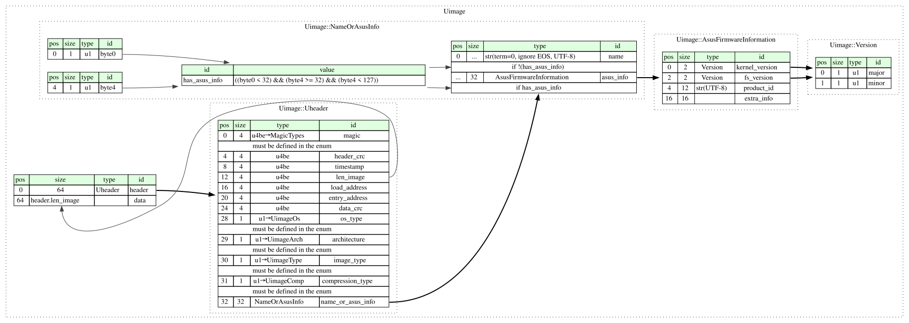

The legacy U-Boot image format (uImage), as created by mkimage: a 64-byte
header followed by the image data (e.g. a Linux kernel, a ramdisk or a
script). The header describes the data (OS, CPU architecture, image type,
compression, load and entry point addresses, name) and protects both the
header and the data with CRC-32 checksums.
U-Boot's newer FIT (Flattened Image Tree) format is not covered by this spec.
This page hosts a formal specification of U-Boot Image wrapper using Kaitai Struct. This specification can be automatically translated into a variety of programming languages to get a parsing library.

meta:
id: uimage
title: U-Boot Image wrapper
application: U-Boot
file-extension:
- bin
- img
- scr # U-Boot scripts (`mkimage -T script`), e.g. `boot.scr`
- trx # ASUS firmware
- bix # firmware of switches based on the Realtek switch SDK
- uimg
xref:
wikidata: Q105856758
license: CC0-1.0
ks-version: '0.11'
endian: be
doc: |
The legacy U-Boot image format (uImage), as created by `mkimage`: a 64-byte
header followed by the image data (e.g. a Linux kernel, a ramdisk or a
script). The header describes the data (OS, CPU architecture, image type,
compression, load and entry point addresses, name) and protects both the
header and the data with CRC-32 checksums.
U-Boot's newer FIT (Flattened Image Tree) format is not covered by this spec.
doc-ref: https://github.com/u-boot/u-boot/blob/ece349ade2973e220f524ce59e59711cc919263f/include/image.h Git tag "v2026.07"
seq:
- id: header
type: uheader
- id: data
size: header.len_image
types:
uheader:
seq:
- id: magic
type: u4
enum: magic_types
valid:
in-enum: true
doc: |
Besides the standard U-Boot magic, some vendors' bootloaders expect
their own value (often a different one for each device model), with
the rest of the header unchanged. `magic_types` lists the values
known so far; images with any other magic are rejected.
- id: header_crc
type: u4
- id: timestamp
type: u4
- id: len_image
type: u4
- id: load_address
type: u4
- id: entry_address
type: u4
- id: data_crc
type: u4
- id: os_type
type: u1
enum: uimage_os
valid:
in-enum: true
- id: architecture
type: u1
enum: uimage_arch
valid:
in-enum: true
- id: image_type
type: u1
enum: uimage_type
valid:
in-enum: true
- id: compression_type
type: u1
enum: uimage_comp
valid:
in-enum: true
- id: name_or_asus_info
size: 32
type: name_or_asus_info
name_or_asus_info:
seq:
- id: name
type: strz
encoding: UTF-8
eos-error: false
if: not has_asus_info
- id: asus_info
type: asus_firmware_information
if: has_asus_info
instances:
has_asus_info:
value: byte0 < 0x20 and byte4 >= 0x20 and byte4 < 0x7f
doc: |
Whether this type stores ASUS firmware information (`asus_info`)
rather than an image name (`name`).
The header doesn't say which one it is, so we infer it using a
heuristic based on the layout of the `asus_firmware_information` type.
If ASUS firmware info is present, the first byte (the major kernel
version number) is a small integer (i.e. not a printable character),
and byte 4 (first byte of the product ID/model name) is a printable
character. An empty name is not mistaken for ASUS information, because
its byte 4 is a null byte.
The highest known major kernel version number is 9 (e.g. in
`DSL-N55U_9.0.0.4_380_3925-gad8f412_Annex_A.trx` from
<https://dlcdnets.asus.com/pub/ASUS/wireless/DSL-N55U/FW_DSL_N55U_90043803925.zip>,
released on 2016-08-04 and listed on
<https://www.asus.com/supportonly/dsl-n55u/helpdesk_bios/>). ASUS
seems to use such high major versions (9, sometimes 7) for beta
releases, whereas regular releases use 3 (or 1 in older firmware).
It can also be 0, in particular due to a bug in the MediaTek MT798X
build of ASUS's `mkimage` (it reads the `-V` values from fixed `argv`
positions, even though it parses the options using `getopt()` - see
<https://github.com/blocktrron/tuf-ax4200-gpl/blob/a4fe37f4d78473f97c6d47cf93d97c3811af90cc/release/src-mtk-MT798X/Uboot-upstream/tools/mkimage.c#L317-L333>).
For example, this is the case in
`RT-AX52_3.0.0.4_388_34015-g9488655.trx` from
<https://dlcdnets.asus.com/pub/ASUS/wireless/RT-AX52/FW_RT-AX52_300438834015.zip>,
released on 2026-03-20 and listed on
<https://www.asus.com/supportonly/rt-ax52/helpdesk_bios?model2Name=RT-AX52>.
byte0:
pos: 0
type: u1
byte4:
pos: 4
type: u1
asus_firmware_information:
doc: |
ASUS firmware images [overlay the 32-byte image
name](https://github.com/drag0njoe/RT-AC55U/blob/cf5874684ab6995ee07e91a52dfdd0562fcc2655/release/src/asustools/mkimage.src/include/image.h#L185-L188)
with a [`TAIL`
structure](https://github.com/drag0njoe/RT-AC55U/blob/cf5874684ab6995ee07e91a52dfdd0562fcc2655/release/src/asustools/mkimage.src/include/image.h#L151-L171)
that contains version information and the product ID (model name).
The first 16 bytes have the same structure in all three known variants of
the `TAIL` structure. The meaning of the last 16 bytes differs across the
variants - therefore, for simplicity, this Kaitai Struct implementation
treats them as an opaque byte array named `extra_info`. For an overview of
the variants, see the documentation for `extra_info`.
-webide-representation: '{product_id} {kernel_version}.{fs_version}'
seq:
- id: kernel_version
type: version
- id: fs_version
type: version
- id: product_id
type: strz
encoding: UTF-8
size: 12
doc: |
In the Ralink SDK variant (see `extra_info`), the product ID field is
actually 23 bytes long, but no known product ID is longer than 12
bytes.
- id: extra_info
size: 16
doc: |
The structure of these bytes varies among the three known variants of
the `TAIL` structure, and the header doesn't say which one is used:
* Plain: 8 hardware versions (using the `version` type) - see
<https://github.com/drag0njoe/RT-AC55U/blob/cf5874684ab6995ee07e91a52dfdd0562fcc2655/release/src/asustools/mkimage.src/include/image.h#L170>
Sample file: `RT-AC51U_3.0.0.4_380_8591-ga8dd632.trx` from
<https://dlcdnets.asus.com/pub/ASUS/wireless/RT-AC51U/FW_RT_AC51U_30043808591.zip>,
released on 2020-09-22 and listed on
<https://www.asus.com/supportonly/rt-ac51u/helpdesk_bios/>.
Source code links:
- [ASUS GPL source, RT-AC55UHP
3.0.0.4.382.51915](https://dlcdnets.asus.com/pub/ASUS/wireless/RT-AC55UHP/GPL_RT_AC55UHP_300438251915.zip)
(`asuswrt/release/src/asustools/mkimage.src/` in
`GPL_RT-AC55UHP_3.0.0.4.382.51915-g4086e57.tgz`)
- [ASUS GPL source, RT-AC55U 3.0.0.4.382.50702 (unofficial
mirror)](https://github.com/drag0njoe/RT-AC55U/tree/cf5874684ab6995ee07e91a52dfdd0562fcc2655/release/src/asustools/mkimage.src)
* `TRX_NEW` (a macro defined when building `mkimage`): the
build number and extended build number (`u2le` each), two key bytes
and 5 hardware versions - see
<https://github.com/drag0njoe/RT-AC55U/blob/cf5874684ab6995ee07e91a52dfdd0562fcc2655/release/src-qca/asustools/mkimage.src/include/image.h#L174-L180>
`mkimage` [overwrites the first 3 hardware
versions](https://github.com/drag0njoe/RT-AC55U/blob/cf5874684ab6995ee07e91a52dfdd0562fcc2655/release/src-qca/asustools/mkimage.src/mkimage.c#L546-L569)
with values derived from the key bytes.
Sample file: `RT-AC55UHP_3.0.0.4_382_52236-ga0f880d.trx` (build 382,
extended build 52236) from
<https://dlcdnets.asus.com/pub/ASUS/wireless/RT-AC55UHP/FW_RT_AC55UHP_300438252236.zip>,
released on 2020-06-04 and listed on
<https://www.asus.com/supportonly/rt-ac55uhp/helpdesk_bios/>.
Source code links:
- [ASUS GPL source, RT-AC55UHP
3.0.0.4.382.51915](https://dlcdnets.asus.com/pub/ASUS/wireless/RT-AC55UHP/GPL_RT_AC55UHP_300438251915.zip)
(`asuswrt/release/src-qca/asustools/mkimage.src/` in
`GPL_RT-AC55UHP_3.0.0.4.382.51915-g4086e57.tgz`)
- [ASUS GPL source, RT-AC55U 3.0.0.4.382.50702 (unofficial
mirror)](https://github.com/drag0njoe/RT-AC55U/tree/cf5874684ab6995ee07e91a52dfdd0562fcc2655/release/src-qca/asustools/mkimage.src)
* Ralink SDK: the rest of a 23-byte product ID (see `product_id`),
a version suffix letter and the kernel part size (called `ih_ksz`) -
see <https://github.com/andy-padavan/rt-n56u/blob/32a93db4026cc2cff585d7008373432d888fc1aa/trunk/tools/mkimage/include/image.h#L164-L165>
Sample file: `RP-N12_1.0.1.1f.trx` from
<https://dlcdnets.asus.com/pub/ASUS/wireless/RP-N12/FW_RP-N12_1.0.1.1f.zip>,
released on 2019-11-12 and listed on
<https://www.asus.com/supportonly/rp-n12/helpdesk_bios/>.
Source code links:
- [ASUS GPL source, RP-N12
1.0.1.1f](https://dlcdnets.asus.com/pub/ASUS/wireless/RP-N12/GPL_RP_N12_1011f.zip)
(`GPL_RP-N12_source.1011f/user/mkimage/include/image.h` in
`GPL_RP-N12_source.1011f.tar.bz2`)
- [rt-n56u custom firmware by Andy
Padavan](https://github.com/andy-padavan/rt-n56u/blob/32a93db4026cc2cff585d7008373432d888fc1aa/trunk/tools/mkimage/include/image.h)
In the plain and `TRX_NEW` variants, the last 4 bytes may instead
contain the offset of the root file system, which is [written by
`mkimage -r`](https://github.com/drag0njoe/RT-AC55U/blob/cf5874684ab6995ee07e91a52dfdd0562fcc2655/release/src/asustools/mkimage.src/mkimage.c#L527-L542)
as the magic byte 0xA9
([`ROOTFS_OFFSET_MAGIC`](https://github.com/drag0njoe/RT-AC55U/blob/cf5874684ab6995ee07e91a52dfdd0562fcc2655/release/src/asustools/mkimage.src/include/image.h#L154-L159))
followed by the offset as a 24-bit big-endian integer.
version:
-webide-representation: '{major:dec}.{minor:dec}'
seq:
- id: major
type: u1
- id: minor
type: u1
enums:
uimage_os:
0:
id: invalid
doc: Invalid OS
1:
id: openbsd
doc: OpenBSD
2:
id: netbsd
doc: NetBSD
3:
id: freebsd
doc: FreeBSD
4:
id: bsd4_4
doc: 4.4BSD
5:
id: linux
doc: Linux
6:
id: svr4
doc: SVR4
7:
id: esix
doc: Esix
8:
id: solaris
doc: Solaris
9:
id: irix
doc: Irix
10:
id: sco
doc: SCO
11:
id: dell
doc: Dell
12:
id: ncr
doc: NCR
13:
id: lynxos
doc: LynxOS
14:
id: vxworks
doc: VxWorks
15:
id: psos
doc: pSOS
16:
id: qnx
doc: QNX
17:
id: u_boot
doc: Firmware
18:
id: rtems
doc: RTEMS
19:
id: artos
doc: ARTOS
20:
id: unity
doc: Unity OS
21:
id: integrity
doc: INTEGRITY
22:
id: ose
doc: OSE
23:
id: plan9
doc: Plan 9
24:
id: openrtos
doc: OpenRTOS
25:
id: arm_trusted_firmware
doc: ARM Trusted Firmware
26:
id: tee
doc: Trusted Execution Environment
27:
id: opensbi
doc: RISC-V OpenSBI
28:
id: efi
doc: EFI Firmware (e.g. GRUB2)
29:
id: elf
doc: ELF Image (e.g. seL4)
uimage_arch:
0:
id: invalid
doc: Invalid CPU
1:
id: alpha
doc: Alpha
2:
id: arm
doc: ARM
3:
id: i386
doc: Intel x86
4:
id: ia64
doc: IA64
5:
id: mips
doc: MIPS
6:
id: mips64
doc: MIPS 64 Bit
7:
id: ppc
doc: PowerPC
8:
id: s390
doc: IBM S390
9:
id: sh
doc: SuperH
10:
id: sparc
doc: Sparc
11:
id: sparc64
doc: Sparc 64 Bit
12:
id: m68k
doc: M68K
13:
id: nios
doc: Nios-32
14:
id: microblaze
doc: MicroBlaze
15:
id: nios2
doc: Nios-II
16:
id: blackfin
doc: Blackfin
17:
id: avr32
doc: AVR32
18:
id: st200
doc: STMicroelectronics ST200
19:
id: sandbox
doc: Sandbox architecture (test only)
20:
id: nds32
doc: ANDES Technology - NDS32
21:
id: openrisc
doc: OpenRISC 1000
22:
id: arm64
doc: ARM64
23:
id: arc
doc: Synopsys DesignWare ARC
24:
id: x86_64
doc: AMD x86_64, Intel and Via
25:
id: xtensa
doc: Xtensa
26:
id: riscv
doc: RISC-V
uimage_comp:
0:
id: none
doc: No Compression Used
1: gzip
2: bzip2
3: lzma
4: lzo
5: lz4
6: zstd
9:
id: mz
doc: |
`IH_COMP_MZ` of the U-Boot fork for SigmaStar (formerly MStar) SoCs,
not defined in upstream U-Boot. Used e.g. in I-O DATA TS-NS240W and
TS-NS320W network camera firmware.
doc-ref:
- https://github.com/OpenIPC/u-boot-sigmastar/blob/bf77aff5d44f34d14b89b3f4014aa8dda9834794/include/image.h#L253 SigmaStar U-Boot (OpenIPC's copy)
- https://lib.iodata.jp/lib/soft/t/tsns240w_f10302.exe I-O DATA TS-NS240W firmware 1.03.02
10:
id: xip
doc: |
`IH_COMP_XIP` of the U-Boot fork for SigmaStar (formerly MStar) SoCs,
not defined in upstream U-Boot. No firmware image with this value was
found among the ones surveyed (September 2026), so it may not be used
in practice.
doc-ref: https://github.com/OpenIPC/u-boot-sigmastar/blob/bf77aff5d44f34d14b89b3f4014aa8dda9834794/include/image.h#L254 SigmaStar U-Boot (OpenIPC's copy)
uimage_type:
0:
id: invalid
doc: Invalid Image
1:
id: standalone
doc: Standalone Program
2:
id: kernel
doc: OS Kernel Image
3:
id: ramdisk
doc: RAMDisk Image
4:
id: multi
doc: Multi-File Image
5:
id: firmware
doc: Firmware Image
6:
id: script
doc: Script file
7:
id: filesystem
doc: Filesystem Image (any type)
8:
id: flatdt
doc: Binary Flat Device Tree Blob
9:
id: kwbimage
doc: Kirkwood Boot Image
10:
id: imximage
doc: Freescale IMXBoot Image
11:
id: ublimage
doc: Davinci UBL Image
12:
id: omapimage
doc: TI OMAP Config Header Image
13:
id: aisimage
doc: TI Davinci AIS Image
14:
id: kernel_noload
doc: OS Kernel Image, can run from any load address
15:
id: pblimage
doc: Freescale PBL Boot Image
16:
id: mxsimage
doc: Freescale MXSBoot Image
17:
id: gpimage
doc: TI Keystone GPHeader Image
18:
id: atmelimage
doc: ATMEL ROM bootable Image
19:
id: socfpgaimage
doc: Altera SOCFPGA CV/AV Preloader
20:
id: x86_setup
doc: x86 setup.bin Image
21:
id: lpc32xximage
doc: x86 setup.bin Image
22:
id: loadable
doc: A list of typeless images
23:
id: rkimage
doc: Rockchip Boot Image
24:
id: rksd
doc: Rockchip SD card
25:
id: rkspi
doc: Rockchip SPI image
26:
id: zynqimage
doc: Xilinx Zynq Boot Image
27:
id: zynqmpimage
doc: Xilinx ZynqMP Boot Image
28:
id: zynqmpbif
doc: Xilinx ZynqMP Boot Image (bif)
29:
id: fpga
doc: FPGA Image
30:
id: vybridimage
doc: VYBRID .vyb Image
31:
id: tee
doc: Trusted Execution Environment OS Image
32:
id: firmware_ivt
doc: Firmware Image with HABv4 IVT
33:
id: pmmc
doc: TI Power Management Micro-Controller Firmware
34:
id: stm32image
doc: STMicroelectronics STM32 Image
35:
id: socfpgaimage_v1
doc: Altera SOCFPGA A10 Preloader
36:
id: mtkimage
doc: MediaTek BootROM loadable Image
37:
id: imx8mimage
doc: Freescale IMX8MBoot Image
38:
id: imx8image
doc: Freescale IMX8Boot Image
39:
id: copro
doc: Coprocessor Image for remoteproc
40:
id: sunxi_egon
doc: Allwinner eGON Boot Image
41:
id: sunxi_toc0
doc: Allwinner TOC0 Boot Image
42:
id: fdt_legacy
doc: Binary Flat Device Tree Blob in a Legacy Image
43:
id: renesas_spkg
doc: Renesas SPKG image
44:
id: starfive_spl
doc: StarFive SPL image
45:
id: tfa_bl31
doc: TFA BL31 image
46:
id: stm32image_v2
doc: STMicroelectronics STM32 Image V2.0
47:
id: amlimage
doc: Amlogic Boot Image
# Finding magics of new devices (many vendors use a different one for
# each model): a header is a uImage if its header CRC is valid, so scan
# firmware files at every offset for that, ignoring the magic. Beware of
# a common false positive: `FF FF FF FF FF FF FF FF` followed by 56 zero
# bytes also has a valid header CRC. In vendor firmware files, the uImage
# often follows a vendor-specific header (e.g. at offset 0x80 in NETGEAR's
# `*.img` files).
#
# Source code:
# https://github.com/search?q=repo%3Aopenwrt%2Fopenwrt+UIMAGE_MAGIC&type=code
# https://github.com/search?q=repo%3Aopenwrt%2Fopenwrt+%2FuImage+%5Cw%2B+-M+0x%2F&type=code
# https://github.com/search?q=IH_MAGIC_DEFAULT&type=code (NETGEAR's U-Boot)
# https://github.com/search?q=CONFIG_IH_MAGIC_NUMBER&type=code (Realtek switch SDK)
#
# Firmware images:
# https://downloads.openwrt.org/releases/
# https://downloads.openwrt.org/snapshots/targets/ (devices added since the last release)
# https://openwrt.org/docs/techref/targets/realtek (switches based on the Realtek switch SDK)
# https://www.engeniustech.com/wp_firmware/ (`*.bix`)
# https://downloads.trendnet.com/
# https://www.allnet.de/en/allnet-brand/support/downloads-search/ (ALLNET; each product's page links its files)
# https://fw-update.ubnt.com/api/firmware-latest (Ubiquiti; the latest firmware of every product)
# https://www.iodata.jp/lib/ (I-O DATA; the JSONP APIs behind it list everything:)
# `https://www.iodata.jp/lib/script/product-index.php?callback=cb&code=<first letter, or 0>` (products)
# `https://www.iodata.jp/lib/script/product.php?callback=cb&code=<product key>` (its software)
# `https://www.iodata.jp/lib/script/soft.php?callback=cb&code=<software key>` (its files)
# `https://lib.iodata.jp/lib/soft/<first letter>/<file name>`
# https://www.zyxel.com/global/en/support/download (ZyXEL, current models:)
# `https://www.zyxel.com/global/en/search_api_autocomplete/product_list_by_model?display=block_1&field=model_machine_name&filter=model&q=<substring>` (models, at most 25 per query)
# `https://www.zyxel.com/global/en/support/download?model=<model>` (its files)
# https://www.zyxel.com/global/en/support/end-of-life (ZyXEL, end-of-life models:)
# https://www.zyxel.com/library/eol/global/www-hardware-data.json (recent ones, often with links to their files)
# https://www.zyxel.com/zyxel-file/eol/ArchivedEOLModel.pdf (older ones, names only)
#
# Only the Wayback Machine lists these (possibly incompletely):
# https://web.archive.org/cdx/search/cdx?matchType=prefix&collapse=urlkey&fl=original&filter=statuscode:200&url=www.downloads.netgear.com/files/ (NETGEAR)
# https://web.archive.org/cdx/search/cdx?matchType=prefix&collapse=urlkey&fl=original&filter=statuscode:200&url=download.zyxel.com/ (ZyXEL files not linked from the pages above)
magic_types:
0x00000005:
id: allnet_all_sg8316m
doc: ALLNET ALL-SG8316M.
doc-ref: https://www.allnet.de/ftp-downloads/allnet/switches/all-sg8316m/all-sg8316m-version_2.2.1.zip ALLNET ALL-SG8316M firmware 2.2.1
0x00000006:
id: allnet_all_sg8208m
doc: ALLNET ALL-SG8208M. OpenWrt device `allnet_all-sg8208m`.
doc-ref:
- https://github.com/openwrt/openwrt/blob/138fabb79f8d68d65e40c8b8d0c0494b19053d0f/target/linux/realtek/image/rtl838x.mk#L10 OpenWrt, `allnet_all-sg8208m`
- https://www.allnet.de/ftp-downloads/allnet/switches/all-sg8208m/all-sg8208m-version_2.2.1_vmlinux.bix.zip ALLNET ALL-SG8208M firmware 2.2.1
0x00000016:
id: allnet_all_sg8324m
doc: ALLNET ALL-SG8324M.
doc-ref: https://www.allnet.de/ftp-downloads/allnet/switches/all-sg8324m/ALL_SG8324M_FW.2.2.1.zip ALLNET ALL-SG8324M firmware 2.2.1
0x00703400:
id: datto_l8
doc: OpenWrt device `datto_l8`.
doc-ref:
- https://github.com/openwrt/openwrt/blob/138fabb79f8d68d65e40c8b8d0c0494b19053d0f/target/linux/realtek/image/rtl838x.mk#L102 OpenWrt, `datto_l8`
- https://downloads.openwrt.org/snapshots/targets/realtek/rtl838x/openwrt-realtek-rtl838x-datto_l8-squashfs-sysupgrade.bin OpenWrt snapshot, `datto_l8`
0x00904000:
id: allnet_all_wapc0450c
doc: ALLNET ALL-WAPC0450C.
doc-ref: https://www.allnet.de/ftp-downloads/allnet/wireless/ALL-WAPC0450C/Firmware-Update_1.01.00_ALL-WAPC0450C.zip ALLNET ALL-WAPC0450C firmware 1.00.04 (in the 1.01.00 update package)
0x03010500:
id: engenius_ews2910p_v3
doc: OpenWrt device `engenius_ews2910p-v3`.
doc-ref:
- https://github.com/openwrt/openwrt/blob/138fabb79f8d68d65e40c8b8d0c0494b19053d0f/target/linux/realtek/image/rtl838x.mk#L124 OpenWrt, `engenius_ews2910p-v3`
- https://downloads.openwrt.org/releases/25.12.5/targets/realtek/rtl838x/openwrt-25.12.5-realtek-rtl838x-engenius_ews2910p-v3-squashfs-sysupgrade.bin OpenWrt 25.12.5, `engenius_ews2910p-v3`
0x03011300:
id: engenius_ews1200_28tfp
doc: EnGenius EWS1200-28TFP firmware 1.07.16 to 1.07.40.
doc-ref: https://www.engeniustech.com/wp_firmware/ews1200-28tfp_fw_1.07.40_c1.9.33_200225-1841.bix EnGenius EWS1200-28TFP firmware 1.07.40
0x03011302:
id: engenius_ews7926efp
doc: EnGenius EWS7926EFP firmware 1.07.22 to 1.07.27.
doc-ref: https://www.engeniustech.com/wp_firmware/ews7926efp_fw_1.07.27_c1.9.37_210312-1805.bix EnGenius EWS7926EFP firmware 1.07.27
0x03012401:
id: engenius_ews7952p
doc: EnGenius EWS7952P firmware 1.07.16 to 1.07.40.
doc-ref: https://www.engeniustech.com/wp_firmware/ews7952p_fw_1.07.40_c1.9.33_200225-1806.bix EnGenius EWS7952P firmware 1.07.40
0x03013100:
id: engenius_ews2908p
doc: EnGenius EWS2908P firmware 1.07.34 to 1.07.43.
doc-ref: https://www.engeniustech.com/wp_firmware/ews2908p_fw_1.07.43_c1.9.37_210311-1751.bix EnGenius EWS2908P firmware 1.07.43
0x03111100:
id: engenius_ews7928p_v2
doc: EnGenius EWS7928P v2 firmware 1.07.40 to 1.07.43.
doc-ref: https://www.engeniustech.com/wp_firmware/ews7928pv2_fw_1.07.43_c1.9.37_210312-1011.bix EnGenius EWS7928P v2 firmware 1.07.43
0x03111300:
id: engenius_ews1200_28tfp_v2
doc: EnGenius EWS1200-28TFP v2 firmware 1.07.43.
doc-ref: https://www.engeniustech.com/wp_firmware/ews1200-28tfpv2_fw_1.07.43_c1.9.37_210312-1021.bix EnGenius EWS1200-28TFP v2 firmware 1.07.43
0x03802910:
id: engenius_ews2910p
doc: |
EnGenius EWS2910P firmware 1.07.16 to 1.07.43. OpenWrt device
`engenius_ews2910p-v1`.
doc-ref:
- https://www.engeniustech.com/wp_firmware/ews2910p_fw_1.07.43_c1.9.37_210311-1807.bix EnGenius EWS2910P firmware 1.07.43
- https://github.com/openwrt/openwrt/blob/138fabb79f8d68d65e40c8b8d0c0494b19053d0f/target/linux/realtek/image/rtl838x.mk#L113 OpenWrt, `engenius_ews2910p-v1`
0x03805912:
id: engenius_ews5912fp
doc: EnGenius EWS5912FP firmware 1.07.16 to 1.07.43.
doc-ref: https://www.engeniustech.com/wp_firmware/ews5912fp_fw_1.07.43_c1.9.37_210312-0947.bix EnGenius EWS5912FP firmware 1.07.43
0x03807928:
id: engenius_ews7928p
doc: EnGenius EWS7928P firmware 1.07.16 to 1.07.40.
doc-ref: https://www.engeniustech.com/wp_firmware/ews7928p_fw_1.07.40_c1.9.33_200225-1707.bix EnGenius EWS7928P firmware 1.07.40
0x03872010:
id: engenius_ews1200d_10t
doc: EnGenius EWS1200D-10T firmware 1.07.16 to 1.07.22.
doc-ref: https://www.engeniustech.com/wp_firmware/ews1200d-10t_fw_1.07.22_c1.9.21_181018-0217.bix EnGenius EWS1200D-10T firmware 1.07.22
0x03872028:
id: engenius_ews1200_28t
doc: EnGenius EWS1200-28T firmware 1.07.16 to 1.07.22.
doc-ref: https://www.engeniustech.com/wp_firmware/ews1200-28t_fw_1.07.22_c1.9.21_181018-0206.bix EnGenius EWS1200-28T firmware 1.07.22
0x0387928f:
id: engenius_ews7928fp
doc: EnGenius EWS7928FP firmware 1.07.16 to 1.07.40.
doc-ref: https://www.engeniustech.com/wp_firmware/ews7928fp_fw_1.07.40_c1.9.33_200415-1156.bix EnGenius EWS7928FP firmware 1.07.40
0x03972052:
id: engenius_ews1200_52t
doc: EnGenius EWS1200-52T firmware 1.07.16 to 1.07.22.
doc-ref: https://www.engeniustech.com/wp_firmware/ews1200-52t_fw_1.07.22_c1.9.21_181018-0154.bix EnGenius EWS1200-52T firmware 1.07.22
0x0397952f:
id: engenius_ews7952fp
doc: EnGenius EWS7952FP firmware 1.07.16 to 1.07.40.
doc-ref: https://www.engeniustech.com/wp_firmware/ews7952fp_fw_1.07.40_c1.9.33_200225-1743.bix EnGenius EWS7952FP firmware 1.07.40
0x12291000:
id: youku_yk_l1
doc: |
OpenWrt devices `youku_x2`, `youku_yk-l1`, `youku_yk-l1c`,
`youku_yk-l2`.
doc-ref:
- https://github.com/openwrt/openwrt/blob/138fabb79f8d68d65e40c8b8d0c0494b19053d0f/target/linux/ramips/image/mt7620.mk#L1456 OpenWrt, `youku_x2`
- https://github.com/openwrt/openwrt/blob/138fabb79f8d68d65e40c8b8d0c0494b19053d0f/target/linux/ramips/image/mt7620.mk#L1469 OpenWrt, `youku_yk-l1`
- https://github.com/openwrt/openwrt/blob/138fabb79f8d68d65e40c8b8d0c0494b19053d0f/target/linux/ramips/image/mt7620.mk#L1481 OpenWrt, `youku_yk-l1c`
- https://github.com/openwrt/openwrt/blob/138fabb79f8d68d65e40c8b8d0c0494b19053d0f/target/linux/ramips/image/mt7621.mk#L3702 OpenWrt, `youku_yk-l2`
- https://downloads.openwrt.org/releases/25.12.5/targets/ramips/mt7620/openwrt-25.12.5-ramips-mt7620-youku_yk-l1-squashfs-sysupgrade.bin OpenWrt 25.12.5, `youku_yk-l1`
0x12345000:
id: realtek_sdk
doc: |
Generic default of the Realtek switch SDK's U-Boot
(`CONFIG_IH_MAGIC_NUMBER`), used e.g. by many TRENDnet switches. OpenWrt
device `apresia_aplgs120gtss`.
doc-ref:
- https://github.com/openwrt/openwrt/blob/138fabb79f8d68d65e40c8b8d0c0494b19053d0f/target/linux/realtek/image/rtl838x.mk#L21 OpenWrt, `apresia_aplgs120gtss`
- https://github.com/halmartin/zyxel-gs1900-gpl/blob/9567911410eb74739dc41cd36934c94b88d53a70/gs1900/u-boot-2011.12/config.in#L217 Realtek SDK U-Boot (ZyXEL GS1900 GPL code)
- https://downloads.trendnet.com/tpe-1620ws_v2/firmware/fw_ws-2-10-024-all.zip TRENDnet TPE-1620WS v2 firmware 2.10.024
0x174e4741:
id: netgear_gs750e
doc: OpenWrt device `netgear_gs750e`.
doc-ref:
- https://github.com/openwrt/openwrt/blob/138fabb79f8d68d65e40c8b8d0c0494b19053d0f/target/linux/realtek/image/rtl839x.mk#L71 OpenWrt, `netgear_gs750e`
- https://downloads.openwrt.org/releases/25.12.5/targets/realtek/rtl839x/openwrt-25.12.5-realtek-rtl839x-netgear_gs750e-squashfs-sysupgrade.bin OpenWrt 25.12.5, `netgear_gs750e`
0x174e4742:
id: netgear_gs728tp_v2
doc: NETGEAR GS728TPv2, GS728TPPv2, GS752TPv2 and GS752TPP.
doc-ref: https://www.downloads.netgear.com/files/GDC/GS728TPv2/GS728_752_TP_TPP_V6.0.0.37.zip NETGEAR GS728TPv2 firmware 6.0.0.37
0x26112015:
id: bolt_bl100
doc: OpenWrt device `bolt_bl100`.
doc-ref:
- https://github.com/openwrt/openwrt/blob/138fabb79f8d68d65e40c8b8d0c0494b19053d0f/target/linux/ramips/image/mt7620.mk#L158 OpenWrt, `bolt_bl100`
- https://downloads.openwrt.org/releases/25.12.5/targets/ramips/mt7620/openwrt-25.12.5-ramips-mt7620-bolt_bl100-squashfs-sysupgrade.bin OpenWrt 25.12.5, `bolt_bl100`
0x27051956:
id: uimage
doc: The standard U-Boot header magic (`IH_MAGIC`).
0x27051967:
id: netgear_wnce4004
doc: NETGEAR WNCE4004.
doc-ref: https://www.downloads.netgear.com/files/GDC/WNCE4004/wnce4004-V1.0.0.32.zip NETGEAR WNCE4004 firmware 1.0.0.32
0x30363132:
id: netgear_wnr612_v2_early
doc: |
"0612" in ASCII. NETGEAR WNR612v2 firmware 1.0.0.2 (later firmware uses
"2061").
doc-ref: https://www.downloads.netgear.com/files/wnr612v2-V1.0.0.2_1.0.3.img NETGEAR WNR612v2 firmware 1.0.0.2
0x31303030:
id: netgear_wnr1000_v2_vc
doc: |
"1000" in ASCII. NETGEAR WNR1000v2-VC. OpenWrt used this magic only in
its `ar71xx` target, which was
[removed](https://github.com/openwrt/openwrt/commit/4e4ee4649553ab536225060a27fc320bf54e458c)
after OpenWrt 19.07, so it is missing from the current OpenWrt code.
doc-ref:
- https://www.downloads.netgear.com/files/WNR1000v2-VC-V1.2.2.56NA.img NETGEAR WNR1000v2-VC firmware 1.2.2.56
- https://github.com/cidermole/wndr3800-uboot/blob/2a3c20a515bdcfad28f75469784973e8921dcbab/include/configs/wnr1000v2.h#L170 NETGEAR U-Boot (GPL code)
- https://github.com/openwrt/openwrt/blob/1da2e82c1182a3fd681da5760be96821213afadd/target/linux/ar71xx/image/legacy.mk#L1004 OpenWrt 19.07, `WNR1000V2_VC`
0x31303031:
id: netgear_wnr1000_v2
doc: |
"1001" in ASCII. OpenWrt device `netgear_wnr1000-v2`.
doc-ref:
- https://github.com/openwrt/openwrt/blob/138fabb79f8d68d65e40c8b8d0c0494b19053d0f/target/linux/ath79/image/tiny-netgear.mk#L35 OpenWrt, `netgear_wnr1000-v2`
- https://www.downloads.netgear.com/files/GDC/WNR1000V2/WNR1000v2-V1.1.2.54NA.zip NETGEAR WNR1000v2 firmware 1.1.2.54
0x31303032:
id: netgear_wnr1000_v2_vm
doc: |
"1002" in ASCII. NETGEAR WNR1000v2-VM. No firmware image with this magic
was found among the ones surveyed (September 2026), so it may not be
used in practice.
doc-ref: https://github.com/cidermole/wndr3800-uboot/blob/2a3c20a515bdcfad28f75469784973e8921dcbab/include/configs/wnr1000v2.h#L172 NETGEAR U-Boot (GPL code)
0x31303034:
id: netgear_wnr1000_v4
doc: |
"1004" in ASCII. NETGEAR WNR1000v4. No firmware image with this magic
was found among the ones surveyed (September 2026), so it may not be
used in practice.
doc-ref: https://github.com/cidermole/wndr3800-uboot/blob/2a3c20a515bdcfad28f75469784973e8921dcbab/include/configs/wnr1000v4.h#L238 NETGEAR U-Boot (GPL code)
0x31313030:
id: netgear_wpn824n
doc: |
"1100" in ASCII. NETGEAR WPN824N. OpenWrt used this magic only in its
`ar71xx` target, which was
[removed](https://github.com/openwrt/openwrt/commit/4e4ee4649553ab536225060a27fc320bf54e458c)
after OpenWrt 19.07, so it is missing from the current OpenWrt code.
doc-ref:
- https://www.downloads.netgear.com/files/WPN824N/Firmware/WPN824N-V1.0.0.28NA.img NETGEAR WPN824N firmware 1.0.0.28
- https://github.com/openwrt/openwrt/blob/1da2e82c1182a3fd681da5760be96821213afadd/target/linux/ar71xx/image/legacy.mk#L1005 OpenWrt 19.07, `WPN824N`
0x31504157:
id: zyxel_uag50
doc: |
"1PAW" in ASCII. ZyXEL UAG50.
doc-ref: https://download.zyxel.com/UAG50/firmware/UAG50_3.00(AAZP.1)C0.zip ZyXEL UAG50 firmware 3.00(AAZP.1)C0
0x32303031:
id: netgear_wnr2000
doc: |
"2001" in ASCII. OpenWrt 19.07 images for the NETGEAR WNR2000 (the stock
firmware uses the standard magic). OpenWrt used this magic only in its
`ar71xx` target, which was
[removed](https://github.com/openwrt/openwrt/commit/4e4ee4649553ab536225060a27fc320bf54e458c)
after OpenWrt 19.07, so it is missing from the current OpenWrt code.
doc-ref:
- https://github.com/openwrt/openwrt/blob/1da2e82c1182a3fd681da5760be96821213afadd/target/linux/ar71xx/image/legacy.mk#L1000 OpenWrt 19.07, `WNR2000`
- https://downloads.openwrt.org/releases/19.07.10/targets/ar71xx/tiny/openwrt-19.07.10-ar71xx-tiny-wnr2000-squashfs-factory.img OpenWrt 19.07.10, `wnr2000`
0x32303033:
id: netgear_wnr2000_v3
doc: |
"2003" in ASCII. OpenWrt device `netgear_wnr2000-v3`.
doc-ref:
- https://github.com/openwrt/openwrt/blob/138fabb79f8d68d65e40c8b8d0c0494b19053d0f/target/linux/ath79/image/tiny-netgear.mk#L49 OpenWrt, `netgear_wnr2000-v3`
- https://www.downloads.netgear.com/files/GDC/WNR2000v3/wnr2000v3-V1.1.2.18.zip NETGEAR WNR2000v3 firmware 1.1.2.18
0x32303034:
id: netgear_wnr2000_v4
doc: |
"2004" in ASCII. NETGEAR WNR2000v4. OpenWrt used this magic only in its
`ar71xx` target, which was
[removed](https://github.com/openwrt/openwrt/commit/4e4ee4649553ab536225060a27fc320bf54e458c)
after OpenWrt 19.07, so it is missing from the current OpenWrt code.
doc-ref:
- https://www.downloads.netgear.com/files/GDC/WNR2000V4/WNR2000v4-V1.0.0.40.zip NETGEAR WNR2000v4 firmware 1.0.0.40
- https://github.com/openwrt/openwrt/blob/1da2e82c1182a3fd681da5760be96821213afadd/target/linux/ar71xx/image/legacy.mk#L999 OpenWrt 19.07, `WNR2000V4`
0x32303631:
id: netgear_wnr612_v2
doc: |
"2061" in ASCII. OpenWrt devices `netgear_wnr612-v2`, `on_n150r`.
doc-ref:
- https://github.com/openwrt/openwrt/blob/138fabb79f8d68d65e40c8b8d0c0494b19053d0f/target/linux/ath79/image/tiny-netgear.mk#L9 OpenWrt, `netgear_wnr612-v2`
- https://github.com/openwrt/openwrt/blob/138fabb79f8d68d65e40c8b8d0c0494b19053d0f/target/linux/ath79/image/tiny-netgear.mk#L22 OpenWrt, `on_n150r`
- https://downloads.openwrt.org/releases/19.07.10/targets/ath79/tiny/openwrt-19.07.10-ath79-tiny-netgear_wnr612-v2-squashfs-factory.img OpenWrt 19.07.10, `netgear_wnr612-v2`
0x32323030:
id: netgear_wnr2200
doc: |
"2200" in ASCII. OpenWrt device `netgear_wnr2200_common`.
doc-ref:
- https://github.com/openwrt/openwrt/blob/138fabb79f8d68d65e40c8b8d0c0494b19053d0f/target/linux/ath79/image/generic.mk#L2356 OpenWrt, `netgear_wnr2200_common`
- https://downloads.openwrt.org/releases/25.12.5/targets/ath79/generic/openwrt-25.12.5-ath79-generic-netgear_wnr2200-8m-squashfs-factory.img OpenWrt 25.12.5, `netgear_wnr2200-8m`
0x33373030:
id: netgear_wndr3700
doc: |
"3700" in ASCII. OpenWrt device `netgear_wndr3700`.
doc-ref:
- https://github.com/openwrt/openwrt/blob/138fabb79f8d68d65e40c8b8d0c0494b19053d0f/target/linux/ath79/image/generic.mk#L2283 OpenWrt, `netgear_wndr3700`
- https://www.downloads.netgear.com/files/GDC/WNDR37AVv1/WNDR3700_WNDR37AV%20Firmware%20Version%201.0.16.98NA.zip NETGEAR WNDR3700 firmware 1.0.16.98
0x33373031:
id: netgear_wndr3700_v2
doc: |
"3701" in ASCII. OpenWrt devices `netgear_wndr3700-v2`,
`netgear_wndr3800`, `netgear_wndr3800ch`, `netgear_wndrmac-v1`,
`netgear_wndrmac-v2`.
doc-ref:
- https://github.com/openwrt/openwrt/blob/138fabb79f8d68d65e40c8b8d0c0494b19053d0f/target/linux/ath79/image/generic.mk#L2297 OpenWrt, `netgear_wndr3700-v2`
- https://github.com/openwrt/openwrt/blob/138fabb79f8d68d65e40c8b8d0c0494b19053d0f/target/linux/ath79/image/generic.mk#L2308 OpenWrt, `netgear_wndr3800`
- https://github.com/openwrt/openwrt/blob/138fabb79f8d68d65e40c8b8d0c0494b19053d0f/target/linux/ath79/image/generic.mk#L2319 OpenWrt, `netgear_wndr3800ch`
- https://github.com/openwrt/openwrt/blob/138fabb79f8d68d65e40c8b8d0c0494b19053d0f/target/linux/ath79/image/generic.mk#L2331 OpenWrt, `netgear_wndrmac-v1`
- https://github.com/openwrt/openwrt/blob/138fabb79f8d68d65e40c8b8d0c0494b19053d0f/target/linux/ath79/image/generic.mk#L2343 OpenWrt, `netgear_wndrmac-v2`
- https://www.downloads.netgear.com/files/WNDR3800-V1.0.0.34.img NETGEAR WNDR3800 firmware 1.0.0.34
0x33373033:
id: netgear_wndr3700_v4
doc: |
"3703" in ASCII. OpenWrt devices `netgear_wndr3700-v4`,
`netgear_wndr4300`, `netgear_wndr4300sw`, `netgear_wndr4300tn`.
doc-ref:
- https://github.com/openwrt/openwrt/blob/138fabb79f8d68d65e40c8b8d0c0494b19053d0f/target/linux/ath79/image/nand.mk#L400 OpenWrt, `netgear_wndr3700-v4`
- https://github.com/openwrt/openwrt/blob/138fabb79f8d68d65e40c8b8d0c0494b19053d0f/target/linux/ath79/image/nand.mk#L410 OpenWrt, `netgear_wndr4300`
- https://github.com/openwrt/openwrt/blob/138fabb79f8d68d65e40c8b8d0c0494b19053d0f/target/linux/ath79/image/nand.mk#L420 OpenWrt, `netgear_wndr4300sw`
- https://github.com/openwrt/openwrt/blob/138fabb79f8d68d65e40c8b8d0c0494b19053d0f/target/linux/ath79/image/nand.mk#L430 OpenWrt, `netgear_wndr4300tn`
- https://www.downloads.netgear.com/files/GDC/WNDR4300/WNDR4300-V1.0.2.104.zip NETGEAR WNDR4300 firmware 1.0.2.104
0x36303030:
id: netgear_r6100
doc: |
"6000" in ASCII. OpenWrt device `netgear_r6100`.
doc-ref:
- https://github.com/openwrt/openwrt/blob/138fabb79f8d68d65e40c8b8d0c0494b19053d0f/target/linux/ath79/image/nand.mk#L388 OpenWrt, `netgear_r6100`
- https://www.downloads.netgear.com/files/GDC/R6100/R6100_V1.0.0.52.zip NETGEAR R6100 firmware 1.0.0.52
0x36313232:
id: netgear_wnr612
doc: |
"6122" in ASCII. NETGEAR WNR612. No firmware image with this magic was
found among the ones surveyed (September 2026), so it may not be used in
practice.
doc-ref: https://github.com/cidermole/wndr3800-uboot/blob/2a3c20a515bdcfad28f75469784973e8921dcbab/include/configs/wnr612.h#L169 NETGEAR U-Boot (GPL code)
0x434f4d42:
id: mitrastar_comb
doc: |
"COMB" in ASCII. Devices made by MitraStar (MSTC), e.g. ZyXEL NBG6604
and I-O DATA WN-AX1167GR2, WN-AX2033GR, WN-AX2033GR2, WN-DX1167GR and
WN-DX2033GR.
doc-ref:
- https://download.zyxel.com/NBG6604/firmware/NBG6604_V1.01(ABIR.2)C0.zip ZyXEL NBG6604 firmware 1.01(ABIR.2)C0
- https://lib.iodata.jp/lib/soft/w/wnax2033gr_f203.zip I-O DATA WN-AX2033GR firmware 2.03
0x434f4d43:
id: mitrastar_comc
doc: |
"COMC" in ASCII. Devices made by MitraStar (MSTC), e.g. I-O DATA
WN-CS300FR, WN-DX1167R, WN-DX1200GR, WN-DX1300EXP, WN-DX1300GRN,
WN-PL1167EX01/02/03, WN-SX300FR and WN-SX300GR.
doc-ref: https://lib.iodata.jp/lib/soft/w/wndx1167r_f105.zip I-O DATA WN-DX1167R firmware 1.05
0x4e474335:
id: netgear_gs308t
doc: |
"NGC5" in ASCII. OpenWrt devices `netgear_gs308t-v1`,
`netgear_gs310tp-v1`.
doc-ref:
- https://github.com/openwrt/openwrt/blob/138fabb79f8d68d65e40c8b8d0c0494b19053d0f/target/linux/realtek/image/rtl838x.mk#L287 OpenWrt, `netgear_gs308t-v1`
- https://github.com/openwrt/openwrt/blob/138fabb79f8d68d65e40c8b8d0c0494b19053d0f/target/linux/realtek/image/rtl838x.mk#L295 OpenWrt, `netgear_gs310tp-v1`
- https://www.downloads.netgear.com/files/GDC/GS308T/GS308T_GS310TP_V1.0.5.7.zip NETGEAR GS308T firmware 1.0.5.7
0x4e474520:
id: netgear_nge
doc: |
"NGE " in ASCII. OpenWrt device `netgear_nge`.
doc-ref:
- https://github.com/openwrt/openwrt/blob/138fabb79f8d68d65e40c8b8d0c0494b19053d0f/target/linux/realtek/image/rtl838x.mk#L237 OpenWrt, `netgear_nge`
- https://www.downloads.netgear.com/files/GDC/GS108Tv3/GS108Tv3_GS110TPv3_GS110TPPv1_V7.1.1.17.zip NETGEAR GS108Tv3 firmware 7.1.1.17
0x4e474620:
id: netgear_ngf
doc: |
"NGF " in ASCII. NETGEAR GC108P and GC108PP.
doc-ref: https://www.downloads.netgear.com/files/GDC/GC108P/GC108P_GC108PP_V1.0.2.4.zip NETGEAR GC108P firmware 1.0.2.4
0x4e474720:
id: netgear_ngg
doc: |
"NGG " in ASCII. OpenWrt device `netgear_ngg`.
doc-ref:
- https://github.com/openwrt/openwrt/blob/138fabb79f8d68d65e40c8b8d0c0494b19053d0f/target/linux/realtek/image/rtl838x.mk#L256 OpenWrt, `netgear_ngg`
- https://downloads.openwrt.org/releases/25.12.5/targets/realtek/rtl838x/openwrt-25.12.5-realtek-rtl838x-netgear_gs110tup-v1-squashfs-sysupgrade.bin OpenWrt 25.12.5, `netgear_gs110tup-v1`
0x4e474820:
id: netgear_ngh
doc: |
"NGH " in ASCII. NETGEAR GS724TPv2 and GS724TPP.
doc-ref: https://www.downloads.netgear.com/files/GDC/GS724TPv2/GS724TPv2_GS724TPP_V2.0.0.16.zip NETGEAR GS724TPv2 firmware 2.0.0.16
0x4e474920:
id: netgear_ngi
doc: |
"NGI " in ASCII. NETGEAR GS716TP and GS716TPP.
doc-ref: https://www.downloads.netgear.com/files/GDC/GS716TP/GS716TP_GS716TPP_V1.0.0.15.zip NETGEAR GS716TP firmware 1.0.0.15
0x4e475020:
id: netgear_ngp
doc: |
"NGP " in ASCII. NETGEAR MS510TXM and MS510TXUP.
doc-ref: https://www.downloads.netgear.com/files/GDC/MS510TXM/MS510TXM_MS510TXUP_1.0.5.23.zip NETGEAR MS510TXM firmware 1.0.5.23
0x4f4b4c49:
id: openwrt_okli
doc: |
"OKLI" in ASCII. The kernel of OpenWrt images for devices whose
bootloader loads a small OpenWrt loader (`lzma-loader`, `loader-okli`)
instead, which then boots this kernel.
doc-ref:
- https://github.com/openwrt/openwrt/blob/138fabb79f8d68d65e40c8b8d0c0494b19053d0f/target/linux/ath79/image/common-tp-link.mk#L92 OpenWrt, `tplink-safeloader-okli`
- https://downloads.openwrt.org/releases/25.12.5/targets/ath79/generic/openwrt-25.12.5-ath79-generic-aruba_ap-105-squashfs-sysupgrade.bin OpenWrt 25.12.5, `aruba_ap-105`
0x68737173:
id: openwrt_dlink_covr
doc: |
"hsqs" in ASCII. The kernel of OpenWrt images for the D-Link COVR-C1200
and COVR-P2500, loaded by OpenWrt's `lzma-loader`.
doc-ref: https://downloads.openwrt.org/releases/25.12.5/targets/ath79/generic/openwrt-25.12.5-ath79-generic-dlink_covr-c1200-a1-squashfs-sysupgrade.bin OpenWrt 25.12.5, `dlink_covr-c1200-a1`
0x73714f4b:
id: openwrt_senao_okli
doc: |
"sqOK" in ASCII. The kernel of OpenWrt images for Senao-based access
points (e.g. EnGenius EAP and ENS series, ALLNET ALL-WAP02860AC,
WatchGuard AP100/200/300), loaded by OpenWrt's `lzma-loader`.
doc-ref: https://downloads.openwrt.org/releases/25.12.5/targets/ath79/generic/openwrt-25.12.5-ath79-generic-engenius_eap1200h-squashfs-factory.bin OpenWrt 25.12.5, `engenius_eap1200h`
0x80800002:
id: engenius_ecs1112fp
doc: |
EnGenius ECS1112FP (`image/series_vmlinux.bix` in the tar archive that
follows a 64-byte header in the `.imag` firmware file, i.e. at offset
0x240).
doc-ref: https://www.engeniustech.com/wp_firmware/ECS1112FP-RTL83xx_fw_1.1.40-2.01.149_20201008-1903.imag EnGenius ECS1112FP firmware
0x83011300:
id: engenius_ews1200_28tfp_old_fw
doc: EnGenius EWS1200-28TFP firmware 1.05.45 to 1.06.21.
doc-ref: https://www.engeniustech.com/wp_firmware/ews1200-28tfp_fw_1.06.21_c1.8.77_180906-0716.bix EnGenius EWS1200-28TFP firmware 1.06.21
0x83011302:
id: engenius_ews7926efp_old_fw
doc: EnGenius EWS7926EFP firmware 1.06.23.
doc-ref: https://www.engeniustech.com/wp_firmware/ews7926efp_fw_1.06.23_c1.8.77_181102-0254.bix EnGenius EWS7926EFP firmware 1.06.23
0x83012401:
id: engenius_ews7952p_old_fw
doc: EnGenius EWS7952P firmware 1.05.52 to 1.06.21.
doc-ref: https://www.engeniustech.com/wp_firmware/ews7952p_fw_1.06.21_c1.8.77_180906-0727.bix EnGenius EWS7952P firmware 1.06.21
0x83800000:
id: realtek_rtl838x
doc: |
Default of the Realtek switch SDK for RTL838x
(`CONFIG_IH_MAGIC_NUMBER`), used e.g. by ZyXEL GS1900 series, Cisco
Sx220 series and Ubiquiti UISP-S switches. EnGenius EGS7228P firmware
1.05.05. OpenWrt devices `zyxel_gs1900`, `inaba_aml2-17gp`,
`horaco_zx-swtgw2c8f`, `mokerlink_2g080gm`, `mokerlink_10gt080m`.
doc-ref:
- https://github.com/ReFirmLabs/binwalk/commit/f21282bce5b699fe627102a0b647416acd54933b binwalk
- https://www.engeniustech.com/wp_firmware/egs7228p_fw_1.05.05_141210-1806.bix EnGenius EGS7228P firmware 1.05.05
- https://github.com/openwrt/openwrt/blob/138fabb79f8d68d65e40c8b8d0c0494b19053d0f/target/linux/realtek/image/common.mk#L93 OpenWrt, `zyxel_gs1900`
- https://github.com/openwrt/openwrt/blob/138fabb79f8d68d65e40c8b8d0c0494b19053d0f/target/linux/realtek/image/rtl838x.mk#L197 OpenWrt, `inaba_aml2-17gp`
- https://github.com/openwrt/openwrt/blob/138fabb79f8d68d65e40c8b8d0c0494b19053d0f/target/linux/realtek/image/rtl930x.mk#L148 OpenWrt, `horaco_zx-swtgw2c8f`
- https://github.com/openwrt/openwrt/blob/138fabb79f8d68d65e40c8b8d0c0494b19053d0f/target/linux/realtek/image/rtl930x.mk#L176 OpenWrt, `mokerlink_2g080gm`
- https://github.com/openwrt/openwrt/blob/138fabb79f8d68d65e40c8b8d0c0494b19053d0f/target/linux/realtek/image/rtl931x.mk#L33 OpenWrt, `mokerlink_10gt080m`
- https://github.com/danieltwagner/teg-s750/blob/13b8db10b2600382be2e3126195e456081532862/gpl_oss_of_realtek_sdk3/kernel/uClinux/vendors/Realtek/SDK/defConf/83xx/uboot.config#L194 Realtek SDK, RTL83xx default configuration (TRENDnet TEG-S750 GPL code)
- https://github.com/halmartin/zyxel-gs1900-gpl/blob/9567911410eb74739dc41cd36934c94b88d53a70/gs1900/turnkey/vendor/ZyXEL/GS1900/config.u-boot#L80 ZyXEL GS1900 GPL code
- https://dl.ui.com/firmwares/uisps/1.10.2/ESX.1.10.2.bix Ubiquiti UISP-S firmware 1.10.2
0x83800001:
id: iodata_bsh_g08m
doc: I-O DATA BSH-G08M.
doc-ref: https://lib.iodata.jp/lib/soft/b/bshg08m_f203.zip I-O DATA BSH-G08M firmware 2.03
0x83800002:
id: iodata_bsh_gp08
doc: I-O DATA BSH-GP08 and Ubiquiti UISP-S (RTL838x).
doc-ref:
- https://lib.iodata.jp/lib/soft/b/bshgp08_f204.zip I-O DATA BSH-GP08 firmware 2.04
- https://dl.ui.com/firmwares/uisps/1.5.0/UISPS.rtl838x.v1.5.0.bix Ubiquiti UISP-S firmware 1.5.0 (RTL838x)
0x83800003:
id: iodata_bsh_g16m
doc: I-O DATA BSH-G16M.
doc-ref: https://lib.iodata.jp/lib/soft/b/bshg16m_f203.zip I-O DATA BSH-G16M firmware 2.03
0x83800004:
id: iodata_bsh_g24m
doc: I-O DATA BSH-G24M.
doc-ref: https://lib.iodata.jp/lib/soft/b/bshg24m_f203.zip I-O DATA BSH-G24M firmware 2.03
0x83800010:
id: iodata_bsh_g08mb
doc: I-O DATA BSH-G08MB.
doc-ref: https://lib.iodata.jp/lib/soft/b/bshg08mb_f101.zip I-O DATA BSH-G08MB firmware 1.01
0x83800011:
id: iodata_bsh_gp08mb
doc: I-O DATA BSH-GP08MB.
doc-ref: https://lib.iodata.jp/lib/soft/b/bshgp08mb_f101.zip I-O DATA BSH-GP08MB firmware 1.01
0x83800012:
id: iodata_bsh_g16mb
doc: I-O DATA BSH-G16MB.
doc-ref: https://lib.iodata.jp/lib/soft/b/bshg16mb_f101.zip I-O DATA BSH-G16MB firmware 1.01
0x83800013:
id: iodata_bsh_g24mb
doc: I-O DATA BSH-G24MB. OpenWrt device `iodata_bsh-g24mb`.
doc-ref:
- https://github.com/openwrt/openwrt/blob/138fabb79f8d68d65e40c8b8d0c0494b19053d0f/target/linux/realtek/image/rtl838x.mk#L206 OpenWrt, `iodata_bsh-g24mb`
- https://lib.iodata.jp/lib/soft/b/bshg24mb_f101.zip I-O DATA BSH-G24MB firmware 1.01
0x83801a0d:
id: trendnet_tpe_3012ls
doc: TRENDnet TPE-3012LS.
doc-ref: https://downloads.trendnet.com/TPE-3012LS/firmware/FW_TPE-3012LS_v1(1.01.28).zip TRENDnet TPE-3012LS firmware 1.01.28
0x83801a0e:
id: trendnet_tpe_3018ls
doc: TRENDnet TPE-3018LS.
doc-ref: https://downloads.trendnet.com/TPE-3018LS/firmware/FW_TPE-3018LS_v1(1.01.28).zip TRENDnet TPE-3018LS firmware 1.01.28
0x83802108:
id: engenius_egs2108p_old_fw
doc: EnGenius EGS2108P firmware 1.05.20.
doc-ref: https://www.engeniustech.com/wp_firmware/egs2108p_fw_1.05.20_150810-1740.bix EnGenius EGS2108P firmware 1.05.20
0x83802110:
id: engenius_egs2110p_old_fw
doc: EnGenius EGS2110P firmware 1.05.20.
doc-ref: https://www.engeniustech.com/wp_firmware/egs2110p_fw_1.05.20_150810-1754.bix EnGenius EGS2110P firmware 1.05.20
0x83802910:
id: engenius_ews2910p_old_fw
doc: EnGenius EWS2910P firmware 1.05.38 to 1.06.21.
doc-ref: https://www.engeniustech.com/wp_firmware/ews2910p_fw_1.06.21_c1.8.77_180906-0547.bix EnGenius EWS2910P firmware 1.06.21
0x83805110:
id: engenius_egs5110p_old_fw
doc: EnGenius EGS5110P firmware 1.05.20.
doc-ref: https://www.engeniustech.com/wp_firmware/egs5110p_fw_1.05.20_150810-1808.bix EnGenius EGS5110P firmware 1.05.20
0x83805212:
id: engenius_egs5212fp_old_fw
doc: EnGenius EGS5212FP firmware 1.05.05.
doc-ref: https://www.engeniustech.com/wp_firmware/egs5212fp_fw_1.05.05_141210-1822.bix EnGenius EGS5212FP firmware 1.05.05
0x83805912:
id: engenius_ews5912fp_old_fw
doc: EnGenius EWS5912FP firmware 1.05.38 to 1.06.21.
doc-ref: https://www.engeniustech.com/wp_firmware/ews5912fp_fw_1.06.21_c1.8.77_180906-0621.bix EnGenius EWS5912FP firmware 1.06.21
0x83807928:
id: engenius_ews7928p_old_fw
doc: EnGenius EWS7928P firmware 1.05.38 to 1.06.21.
doc-ref: https://www.engeniustech.com/wp_firmware/ews7928p_fw_1.06.21_c1.8.77_180906-0632.bix EnGenius EWS7928P firmware 1.06.21
0x83872010:
id: engenius_ews1200d_10t_old_fw
doc: EnGenius EWS1200D-10T firmware 1.05.39 to 1.06.21.
doc-ref: https://www.engeniustech.com/wp_firmware/ews1200d-10t_fw_1.06.21_c1.8.77_180906-0705.bix EnGenius EWS1200D-10T firmware 1.06.21
0x83872028:
id: engenius_ews1200_28t_old_fw
doc: EnGenius EWS1200-28T firmware 1.05.38 to 1.06.21.
doc-ref: https://www.engeniustech.com/wp_firmware/ews1200-28t_fw_1.06.21_c1.8.77_180906-0610.bix EnGenius EWS1200-28T firmware 1.06.21
0x8387228f:
id: engenius_egs7228fp_old_fw
doc: EnGenius EGS7228FP firmware 1.05.05.
doc-ref: https://www.engeniustech.com/wp_firmware/egs7228fp_fw_1.05.05_141210-1751.bix EnGenius EGS7228FP firmware 1.05.05
0x8387928f:
id: engenius_ews7928fp_old_fw
doc: EnGenius EWS7928FP firmware 1.05.42 to 1.06.21.
doc-ref: https://www.engeniustech.com/wp_firmware/ews7928fp_fw_1.06.21_c1.8.77_180906-0558.bix EnGenius EWS7928FP firmware 1.06.21
0x83900000:
id: realtek_rtl839x
doc: |
Default of the Realtek switch SDK for RTL839x
(`CONFIG_IH_MAGIC_NUMBER`). No firmware image with this magic was found
among the ones surveyed (September 2026), so it may not be used in
practice.
doc-ref: https://github.com/danieltwagner/teg-s750/blob/13b8db10b2600382be2e3126195e456081532862/gpl_oss_of_realtek_sdk3/kernel/uClinux/vendors/Realtek/SDK/defConf/8390/uboot.config#L194 Realtek SDK, RTL8390 default configuration (TRENDnet TEG-S750 GPL code)
0x83960000:
id: realtek_rtl8396
doc: |
Default of the Realtek switch SDK for RTL8396
(`CONFIG_IH_MAGIC_NUMBER`). No firmware image with this magic was found
among the ones surveyed (September 2026), so it may not be used in
practice.
doc-ref: https://github.com/danieltwagner/teg-s750/blob/13b8db10b2600382be2e3126195e456081532862/gpl_oss_of_realtek_sdk3/kernel/uClinux/vendors/Realtek/SDK/defConf/8396msc/uboot.config#L165 Realtek SDK, RTL8396 default configuration (TRENDnet TEG-S750 GPL code)
0x83972052:
id: engenius_ews1200_52t_old_fw
doc: EnGenius EWS1200-52T firmware 1.05.38 to 1.06.21.
doc-ref: https://www.engeniustech.com/wp_firmware/ews1200-52t_fw_1.06.21_c1.8.77_180906-0654.bix EnGenius EWS1200-52T firmware 1.06.21
0x8397252f:
id: engenius_egs7252fp_old_fw
doc: EnGenius EGS7252FP firmware 1.05.05.
doc-ref: https://www.engeniustech.com/wp_firmware/egs7252fp_fw_1.05.05_141210-1838.bix EnGenius EGS7252FP firmware 1.05.05
0x8397952f:
id: engenius_ews7952fp_old_fw
doc: EnGenius EWS7952FP firmware 1.05.38 to 1.06.21.
doc-ref: https://www.engeniustech.com/wp_firmware/ews7952fp_fw_1.06.21_c1.8.77_180906-0643.bix EnGenius EWS7952FP firmware 1.06.21
0x93000000:
id: realtek_rtl930x
doc: |
Default of the Realtek switch SDK for RTL930x
(`CONFIG_IH_MAGIC_NUMBER`), used e.g. by TRENDnet and Ubiquiti UISP-S
switches. EnGenius ECS1528FP (`image/series_vmlinux.bix` in the tar
archive that follows a 64-byte header in the `.imag` firmware file, i.e.
at offset 0x240). OpenWrt devices `sirivision_sr-st3408f`,
`sirivision_sr-st3808f`, `keeplink_kp-9000-8xm`, `plasmacloud-common`,
`vimin_vm-s100-0800ms`, `xikestor_sks8300-8t`,
`xikestor_sks8300-12e2t2x`, `xikestor_sks8310-8x`,
`sirivision_sr-st31212f`.
doc-ref:
- https://www.engeniustech.com/wp_firmware/ECS1528FP-RTL93xx_fw_1.1.40-3.01.149_20201008-1907.imag EnGenius ECS1528FP firmware
- https://github.com/openwrt/openwrt/blob/138fabb79f8d68d65e40c8b8d0c0494b19053d0f/target/linux/realtek/image/rtl930x.mk#L27 OpenWrt, `sirivision_sr-st3408f`
- https://github.com/openwrt/openwrt/blob/138fabb79f8d68d65e40c8b8d0c0494b19053d0f/target/linux/realtek/image/rtl930x.mk#L38 OpenWrt, `sirivision_sr-st3808f`
- https://github.com/openwrt/openwrt/blob/138fabb79f8d68d65e40c8b8d0c0494b19053d0f/target/linux/realtek/image/rtl930x.mk#L165 OpenWrt, `keeplink_kp-9000-8xm`
- https://github.com/openwrt/openwrt/blob/138fabb79f8d68d65e40c8b8d0c0494b19053d0f/target/linux/realtek/image/rtl930x.mk#L204 OpenWrt, `plasmacloud-common`
- https://github.com/openwrt/openwrt/blob/138fabb79f8d68d65e40c8b8d0c0494b19053d0f/target/linux/realtek/image/rtl930x.mk#L268 OpenWrt, `vimin_vm-s100-0800ms`
- https://github.com/openwrt/openwrt/blob/138fabb79f8d68d65e40c8b8d0c0494b19053d0f/target/linux/realtek/image/rtl930x.mk#L305 OpenWrt, `xikestor_sks8300-8t`
- https://github.com/openwrt/openwrt/blob/138fabb79f8d68d65e40c8b8d0c0494b19053d0f/target/linux/realtek/image/rtl930x.mk#L339 OpenWrt, `xikestor_sks8300-12e2t2x`
- https://github.com/openwrt/openwrt/blob/138fabb79f8d68d65e40c8b8d0c0494b19053d0f/target/linux/realtek/image/rtl930x.mk#L358 OpenWrt, `xikestor_sks8310-8x`
- https://github.com/openwrt/openwrt/blob/138fabb79f8d68d65e40c8b8d0c0494b19053d0f/target/linux/realtek/image/rtl931x.mk#L71 OpenWrt, `sirivision_sr-st31212f`
- https://github.com/danieltwagner/teg-s750/blob/13b8db10b2600382be2e3126195e456081532862/gpl_oss_of_realtek_sdk3/kernel/uClinux/vendors/Realtek/SDK/defConf/9300/uboot.config#L196 Realtek SDK, RTL9300 default configuration (TRENDnet TEG-S750 GPL code)
- https://dl.ui.com/firmwares/uisps/1.5.0/UISPS.rtl930x.v1.5.0.bix Ubiquiti UISP-S firmware 1.5.0 (RTL930x)
0x93001010:
id: zyxel_xgs1010_12
doc: OpenWrt device `zyxel_xgs1010-12`.
doc-ref:
- https://github.com/openwrt/openwrt/blob/138fabb79f8d68d65e40c8b8d0c0494b19053d0f/target/linux/realtek/image/common.mk#L106 OpenWrt, `zyxel_xgs1010-12`
- https://downloads.openwrt.org/releases/25.12.5/targets/realtek/rtl930x/openwrt-25.12.5-realtek-rtl930x-zyxel_xgs1010-12-a1-squashfs-sysupgrade.bin OpenWrt 25.12.5, `zyxel_xgs1010-12-a1`
0x93001210:
id: zyxel_xgs1210_12
doc: OpenWrt device `zyxel_xgs1210-12`.
doc-ref:
- https://github.com/openwrt/openwrt/blob/138fabb79f8d68d65e40c8b8d0c0494b19053d0f/target/linux/realtek/image/common.mk#L116 OpenWrt, `zyxel_xgs1210-12`
- https://download.zyxel.com/XGS1210-12/firmware/XGS1210-12_V2.00(ABTY.0)C0.zip ZyXEL XGS1210-12 firmware 2.00(ABTY.0)C0
0x93001250:
id: zyxel_xgs1250_12
doc: OpenWrt device `zyxel_xgs1250-12-common`.
doc-ref:
- https://github.com/openwrt/openwrt/blob/138fabb79f8d68d65e40c8b8d0c0494b19053d0f/target/linux/realtek/image/rtl930x.mk#L402 OpenWrt, `zyxel_xgs1250-12-common`
- https://download.zyxel.com/XGS1250-12/firmware/XGS1250-12_2.00(ABWE.0)C0.zip ZyXEL XGS1250-12 firmware 2.00(ABWE.0)C0
0x93030000:
id: nicgiga_s100_0800s_m
doc: OpenWrt devices `nicgiga_s100-0800s-m`, `tplink_tl-st1008f-v2`.
doc-ref:
- https://github.com/openwrt/openwrt/blob/138fabb79f8d68d65e40c8b8d0c0494b19053d0f/target/linux/realtek/image/rtl930x.mk#L193 OpenWrt, `nicgiga_s100-0800s-m`
- https://github.com/openwrt/openwrt/blob/138fabb79f8d68d65e40c8b8d0c0494b19053d0f/target/linux/realtek/image/rtl930x.mk#L236 OpenWrt, `tplink_tl-st1008f-v2`
- https://downloads.openwrt.org/snapshots/targets/realtek/rtl930x/openwrt-realtek-rtl930x-nicgiga_s100-0800s-m-squashfs-sysupgrade.bin OpenWrt snapshot, `nicgiga_s100-0800s-m`
0x93100000:
id: plasmacloud_psx28
doc: OpenWrt device `plasmacloud-common`.
doc-ref:
- https://github.com/openwrt/openwrt/blob/138fabb79f8d68d65e40c8b8d0c0494b19053d0f/target/linux/realtek/image/rtl931x.mk#L40 OpenWrt, `plasmacloud-common`
- https://downloads.openwrt.org/releases/25.12.5/targets/realtek/rtl931x/openwrt-25.12.5-realtek-rtl931x-plasmacloud_psx28-squashfs-factory.bin OpenWrt 25.12.5, `plasmacloud_psx28`